Tema 3.B.32
Perspectivas económicas mundiales. Estructura sectorial y geográfica de los flujos comerciales y financieros internacionales.\cortetitulo Las nuevas áreas emergentes.
Perspectivas del FMI 2026, estructura del comercio y de la inversión mundial, modelo de gravedad, ciclo financiero global y convergencia de los emergentes.
Exclusivo Material exclusivo de victorgutierrezmarcos.es y la app Oposición TCEE · DCE. Puedes usarlo libremente para tu estudio personal. No se autoriza su incorporación a otras plataformas, aplicaciones o servicios. Condiciones de uso.
Introducción
Enganche:
«Dios aprieta, pero no ahoga», dice el refrán. En 2026 la economía mundial ha encajado una guerra en Oriente Medio que cerró el estrecho de Ormuz, por donde pasaba una cuarta parte del petróleo que viaja por mar, una subida del 41 % del precio del crudo y los aranceles de Estados Unidos más altos desde los años 40.
Y, sin embargo, el Fondo Monetario Internacional (FMI) prevé que el producto interior bruto (PIB) mundial crezca un 3,1 % en 2026, apenas 4 décimas menos que en 2025, sostenido por el auge de la inversión en inteligencia artificial y por los emergentes de Asia (gráfico 1).
La pregunta que recorre la exposición es: ¿hacia dónde va la economía mundial y quién la mueve: los mismos de siempre o las nuevas áreas emergentes?
Relevancia:
Para el análisis: la fotografía de la economía mundial (cuánto crece, qué se comercia, quién financia a quién) es el contexto de cualquier decisión de política económica, y las previsiones de los organismos internacionales son su lenguaje común.
Para España: una economía abierta, cuyas exportaciones, turismo e inversión directa dependen de la demanda mundial y de la geografía del comercio [ver tema 4.A.22] [ver tema 4.A.23], y cuyas previsiones arrancan siempre del cuadro internacional [ver tema 4.A.29].
Para el oficio del técnico comercial: interpretar los datos de comercio e inversión y anticipar dónde estarán los mercados de mañana es su trabajo diario.
Contextualización:
Perspectivas: las previsiones a corto y medio plazo de crecimiento, inflación, comercio y riesgos que publican el FMI (World Economic Outlook, WEO, en abril y octubre), la Organización para la Cooperación y el Desarrollo Económicos (OCDE), el Banco Mundial y la Organización Mundial del Comercio (OMC).
Flujos internacionales: los flujos comerciales son las exportaciones e importaciones de bienes y de servicios; los flujos financieros, las compras y ventas de activos entre residentes y no residentes (inversión directa, inversión de cartera, otra inversión, sobre todo préstamos bancarios, y reservas), que recoge la cuenta financiera de la balanza de pagos [ver tema 3.B.11]. Su estructura sectorial dice qué se intercambia; la geográfica, quién con quién.
Nuevas áreas emergentes: las economías que, sin ser aún avanzadas, crecen deprisa, se integran en el comercio y en las finanzas mundiales y ganan peso en la economía mundial: China, la India, el Sudeste Asiático, el Golfo, partes de América Latina y, cada vez más, de África.
De dónde venimos: tras la hiperglobalización de 1990-2008, el comercio dejó de crecer más deprisa que el PIB y, desde 2018, las tensiones comerciales, la pandemia y las guerras han traído la fragmentación [ver tema 3.B.21] [ver tema 3.B.18].
Problemática (preguntas clave):
¿Cómo está la economía mundial, qué se espera y qué riesgos la amenazan?
¿Qué se comercia, quién comercia con quién y por qué la distancia sigue importando?
¿Cómo se mueve el capital entre países y qué lo impulsa?
¿Quiénes son las nuevas áreas emergentes, por qué emergen y qué retos tienen?
Estructura:
La exposición va de lo agregado a lo desagregado y del presente al futuro:
I. Perspectivas económicas mundiales (I): la coyuntura, los riesgos y las tendencias de fondo, con el desplazamiento del centro de gravedad de la economía mundial.
II. Estructura de los flujos comerciales y financieros (II): el comercio de mercancías y de servicios, la geografía del comercio con el modelo de gravedad y los flujos financieros con el ciclo financiero global.
III. Las nuevas áreas emergentes (III): qué son, por qué emergen (la convergencia condicional), cuáles son y qué retos tienen.
3.B.32. Perspectivas económicas mundiales. Estructura sectorial y geográfica de los flujos comerciales y financieros internacionales. Las nuevas áreas emergentes
Introducción2′30″
I. Perspectivas económicas mundiales8′
1. La coyuntura: una economía resistente bajo presión
2. Riesgos y recomendaciones de política
3. El medio y el largo plazo: el centro de gravedad se desplaza
II. Estructura de los flujos comerciales y financieros13′
1. El comercio de mercancías
2. El comercio de servicios y las cadenas globales de valor
3. La geografía del comercio: el modelo de gravedad
4. Los flujos financieros
5. El ciclo financiero global
III. Las nuevas áreas emergentes5′30″
1. Concepto y causas: la convergencia condicional
2. Las principales áreas emergentes
3. Retos de las economías emergentes
Conclusión1′
Reparto del cante: introducción, 2′30″; I, 8′ (I.1, 3′; I.2, 1′30″; I.3, 3′30″, con 2′ para el centro de gravedad); II, 13′ (II.1, 3′; II.2, 2′; II.3, 3′; II.4, 2′30″; II.5, 2′30″); III, 5′30″ (III.1, 2′30″; III.2, 2′; III.3, 1′), y conclusión, 1′. Es un tema de datos: no se trata de recitar cifras, sino de dar pocas y bien elegidas (una por idea) y de explicarlas con 4 modelos sencillos. Se dibujan el desplazamiento del centro de gravedad (gráfico 4), la recta de gravedad (gráfico 9), el circuito del ciclo financiero global (figura 1) y la nube de convergencia (gráfico 12); las funciones clave son la ecuación de gravedad (2) y la de convergencia (3). Los demás gráficos son de apoyo. Las cifras caducan cada año: están en el registro de datos del tema y se actualizan con el WEO de octubre.
Notación y siglas. \(Y_i\) es el PIB del país \(i\); \(X_{ij}\), las exportaciones del país \(i\) al \(j\); \(d_{ij}\), la distancia entre ambos; \(Y/L\), el PIB por habitante. PPA: paridad de poder adquisitivo. EMED: economías de mercados emergentes y en desarrollo (emerging market and developing economies, la clasificación del FMI). IED: inversión extranjera directa. CGV: cadenas globales de valor. CUCI: Clasificación Uniforme para el Comercio Internacional. BPI: Banco de Pagos Internacionales. UNCTAD: Conferencia de las Naciones Unidas sobre Comercio y Desarrollo. NMF: nación más favorecida.
Para saber más
José Antonio Alonso (dir.), Lecciones sobre economía mundial: el manual en castellano de la estructura de la economía mundial, el comercio, las finanzas y el desarrollo.
Jaime Requeijo, Economía mundial: la estructura del comercio y de los pagos internacionales con un enfoque de manual.
El FMI, World Economic Outlook (imf.org/weo), y la OMC, Global Trade Outlook and Statistics (wto.org): las 2 fuentes que hay que mirar cada año para poner al día este tema.
I. Perspectivas económicas mundiales
Conclusión anticipada: la economía mundial ha resistido una sucesión de choques (aranceles, guerra, petróleo caro) mejor de lo esperado, pero crece menos que antes de la pandemia, con riesgos a la baja y poco margen fiscal. A largo plazo, el centro de gravedad económico se desplaza hacia Asia.
Nexo: empezamos por la fotografía del presente y las previsiones a 2 años.
I.1. La coyuntura: una economía resistente bajo presión
El diagnóstico del FMI: el WEO de octubre de 2026 se titula Resiliencia bajo presión, decisiones urgentes (Resilience Under Strain, Urgent Choices) y describe una economía mundial movida por 2 fuerzas de signo contrario:
la geopolítica: la guerra en Oriente Medio desde finales de febrero de 2026 y el cierre del estrecho de Ormuz cortaron unos 20 millones de barriles diarios de petróleo; el precio medio del crudo sube un 41 % en 2026, hasta unos 96 dólares, y el FMI supone que el estrecho se reabre en marzo de 2027;
la tecnología: el auge de la inversión en inteligencia artificial (centros de datos, semiconductores, energía) actúa como un choque positivo de demanda, sobre todo en Estados Unidos y en Asia.
El resultado es una perspectiva «bifurcada»: sufren más los importadores de energía poco conectados con la cadena de la inteligencia artificial, y menos los productores de tecnología.
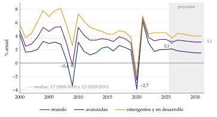
Fuente: elaboración propia con datos del FMI, World Economic Outlook de octubre de 2026 . Desde 2026, previsiones. Las líneas discontinuas son la media de 2000-2019 (3,7 %) y la de 2028-2031 (3,2 %).
Las cifras, en 3 ideas (gráfico 2):
el mundo crece algo menos: el 3,5 % en 2025, el 3,1 % en 2026 y el 3,4 % en 2027, por debajo de la media de 2000-2019 (3,7 %);
los avanzados resisten: un 2,1 % en 2026, con Estados Unidos en el 2,3 % (la inversión en inteligencia artificial compensa los aranceles), la zona del euro en el 1,1 % y Japón en el 0,7 %; España, con el 2,5 %, sigue entre las que más crecen de la zona del euro [ver tema 4.A.29];
los emergentes frenan: del 4,5 % al 3,7 %, por el golpe a Oriente Medio y Asia Central (\(-0{,}3\) %; Arabia Saudí, \(-3{,}3\) %); China se modera (4,5 %) y la India sigue siendo la gran economía que más crece (7 %).
Los precios: la inflación mundial repunta del 4,1 % en 2025 al 4,7 % en 2026 por la energía, y vuelve al 4,1 % en 2027.
El comercio: el volumen del comercio mundial de mercancías creció un 4,2 % en 2025, con compras adelantadas a los aranceles, y la OMC prevé el 3,9 % en 2026 y el 4,1 % en 2027. Lo sostienen los bienes ligados a la inteligencia artificial, que ya son el 14,8 % del comercio de mercancías y explican casi la mitad de su crecimiento en el primer semestre de 2026. Los aranceles medios de Estados Unidos, del 2,6 % en 2024 a cerca del 7 % en 2026, desvían el comercio más de lo que lo reducen [ver tema 3.B.21].
Las otras previsiones coinciden en el fondo: la OCDE prevé un 2,9 % para 2026 y un 3 % para 2027, y el Banco Mundial, un 2,5 % para 2026.1
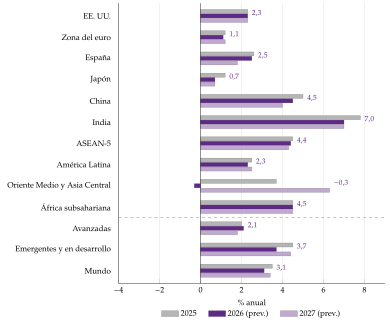
Fuente: elaboración propia con datos del FMI, World Economic Outlook de octubre de 2026 . 2026 y 2027, previsiones; el número es la de 2026. ASEAN-5: Filipinas, Indonesia, Malasia, Singapur y Tailandia.
I.2. Riesgos y recomendaciones de política
Nexo: una previsión es una apuesta; lo que importa es hacia dónde están los riesgos y qué deben hacer los gobiernos.
Riesgos a la baja, según el FMI:
que la guerra se prolongue o se extienda, con un petróleo más caro durante más tiempo;
una corrección brusca de las expectativas sobre la inteligencia artificial: el Informe sobre la estabilidad financiera mundial advierte de valoraciones exigentes, apalancamiento y «financiación circular» entre las empresas del sector;
nuevas tensiones comerciales y más fragmentación geoeconómica;
una subida desordenada de los tipos de interés de la deuda pública: la deuda de los avanzados pasará del 108 % al 115 % del PIB entre 2025 y 2031, y la de los emergentes, del 74 % al 84 %.
Riesgo al alza: que la inteligencia artificial eleve la productividad antes de lo previsto, entre 0,1 y 0,8 puntos de crecimiento anual a medio plazo. Es la vieja paradoja de Robert Solow (1987), «se ven ordenadores por todas partes salvo en las estadísticas de productividad»:2 la tecnología solo eleva el crecimiento cuando se difunde y desplaza a la vieja, el proceso de destrucción creativa3 [ver tema 3.A.44].
Recomendaciones:
fiscal: reconstruir con urgencia el margen fiscal; las ayudas por la energía, focalizadas y temporales (las que contienen los precios pueden costar de 3 a 22 veces más que las transferencias a los hogares vulnerables) [ver tema 3.A.40];
monetaria: prudente, vigilando los efectos de segunda ronda del petróleo y con bancos centrales independientes [ver tema 3.A.36];
reequilibrio global: más consumo en China, menos déficit público en Estados Unidos y más inversión en Europa, en vez de aranceles, que apenas mueven los saldos exteriores;
estructurales: reformas que difundan la inteligencia artificial y la cooperación multilateral en comercio, deuda y clima [ver tema 3.B.19].
I.3. El medio y el largo plazo: el centro de gravedad se desplaza
Nexo: más allá del ciclo, lo que cambia el mapa de la economía mundial son las tendencias de fondo.
Menos crecimiento a medio plazo: el FMI prevé un 3,2 % anual en 2028-2031, frente al 3,7 % de 2000-2019 (gráfico 1), por 4 fuerzas:
la demografía: la población envejece en los avanzados y en China, y crece solo en la India, el sur de Asia y África;
la productividad: crece menos desde 2008 en casi todo el mundo; la inteligencia artificial es la gran incógnita [ver tema 3.A.45];
la fragmentación: la seguridad económica pesa más que la eficiencia, y la parte del comercio mundial en condiciones de NMF bajó del 80 % a principios de 2025 al 72 % en febrero de 2026 [ver tema 3.B.33];
la transición energética y el cambio climático: exigen inversiones enormes y cambian quién exporta qué [ver tema 3.B.31].
La convergencia se frena: el Banco Mundial habla de «casi una década de convergencia perdida» para los emergentes sin China ni la India.
Pero el peso de los emergentes sigue subiendo (gráfico 3):
en PPA, los avanzados pasan del 65 % del PIB mundial en 1980 al 39,5 % en 2025 (36,3 % en 2031); los emergentes los superan desde 2009;
China pasa del 2,1 % al 19,6 % y supera a Estados Unidos (14,6 %) desde 2016; la India, del 2,7 % al 8,2 % (10,2 % en 2031);
a tipos de cambio de mercado, el orden es otro: Estados Unidos sigue siendo el 26 % del PIB mundial, frente al 16,6 % de China, y los emergentes, el 41 %.4
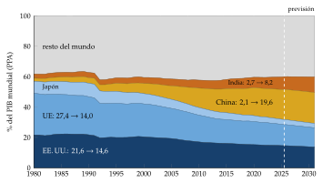
Fuente: elaboración propia con datos del FMI, World Economic Outlook de octubre de 2026 . UE: los 27 actuales en toda la serie. El salto de 1992 es la entrada en la serie de las antiguas repúblicas soviéticas. Desde 2026, previsiones.
I.3.1. El centro de gravedad económico del mundo (Quah, 2011)
a) Idea
Los porcentajes del gráfico anterior dicen quién pesa más, pero no dónde está la actividad. D. Quah (2011) propone resumirlo en un solo punto del mapa: el centro de gravedad económico del mundo, el lugar donde se equilibraría el planeta si cada país pesara lo que produce.
Su desplazamiento cuenta en un dibujo la historia de los últimos 45 años: el regreso de Asia.
b) Modelo
i) Supuestos
La Tierra es una esfera y la producción de cada país se concentra en un punto, su centroide geográfico.
Cada país pesa su PIB, en PPA (para medir volumen de actividad y no precios).
El centro es el centro de masas de esos puntos, que queda en el interior de la Tierra y se proyecta sobre la superficie desde el centro del planeta.
ii) Desarrollo
Paso 1, cada país es un vector:
el centroide del país \(i\), con latitud \(\phi_i\) y longitud \(\lambda_i\), es el vector unitario \[\vec{u}_i=(\cos\phi_i\cos\lambda_i,\ \cos\phi_i\sin\lambda_i,\ \sin\phi_i).\]
Paso 2, la media ponderada por el PIB:
el centro de masas es
\[\vec{c}=\frac{\sum_i Y_i\,\vec{u}_i}{\sum_i Y_i}\tag{1}\]
Paso 3, la proyección:
el punto del mapa es la dirección de \(\vec{c}\), \(\vec{c}/\lVert\vec{c}\rVert\); como los países están repartidos por todo el globo, \(\lVert\vec{c}\rVert<1\) y el centro de masas queda a unos 2.700 km bajo la superficie.
iii) Implicaciones
Si un país crece más que la media, el centro se acerca a él: el desplazamiento resume a la vez las diferencias de crecimiento y la geografía.
Si la actividad se reparte más por el globo, el centro de masas se hunde hacia el centro de la Tierra: la profundidad mide la dispersión de la economía mundial.
c) Extensiones
Con más detalle geográfico (Quah usa unas 700 localizaciones) o con el PIB a tipos de cambio de mercado, el recorrido se desplaza, pero la dirección es la misma.
El mismo cálculo con la población, el comercio o las emisiones da los centros de gravedad demográfico, comercial o de la contaminación.
d) Evidencia empírica
Con los datos del FMI (gráfico 4), el centro estaba en 1980 en el Atlántico Norte, al este de Groenlandia (66 N, 16 O); en 2000, en el mar de Noruega (72 N, 15 E), y en 2025, en Siberia occidental, más allá de los Urales (61 N, 65 E). En 2031 seguirá hacia el sureste.
Entre 1980 y 2025 ha recorrido unos 3.800 km hacia el este, y desde 2000 baja hacia el sur: es el tirón de China primero y de la India después.
D. Quah (2011), con otro método de proyección, lo situaba en mitad del Atlántico en 1980, al este de Esmirna en 2008 y, para 2050, entre la India y China.
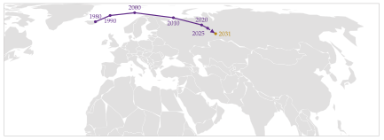
Fuente: elaboración propia con el método de D. Quah (2011): centroides de Natural Earth y PIB en PPA del FMI, World Economic Outlook de octubre de 2026 . 2031, previsión.
e) Valoración
A favor: es intuitivo, se calcula con datos públicos y transmite de un vistazo el cambio de hegemonía económica.
En contra:
el punto proyectado puede caer en un lugar sin actividad (el Ártico o Siberia): su latitud dice poco, y lo que importa es la dirección del movimiento;
depende de la medida del PIB (PPA o mercado) y de cómo se reparte la actividad dentro de cada país;
describe, pero no explica: por qué crecen más los emergentes lo responde la convergencia condicional del apartado III.
Recapitulando el apartado I: la economía mundial resiste, pero crece menos y con riesgos a la baja; a largo plazo su centro se desplaza hacia Asia. Ese desplazamiento se ve también en el comercio y en las finanzas, que estudiamos a continuación.
II. Estructura de los flujos comerciales y financieros
Conclusión anticipada: el comercio mundial es sobre todo de manufacturas, cada vez más de servicios y de bienes ligados a la tecnología, y se concentra en 3 polos (Asia oriental, Europa y América del Norte), con Asia en ascenso; la distancia sigue pesando, como predice el modelo de gravedad. Los flujos financieros son mucho más volátiles, van sobre todo entre países ricos y se mueven al ritmo de un ciclo financiero global que marca la Reserva Federal.
Nexo: tras las perspectivas, pasamos a qué se intercambia y entre quiénes, empezando por las mercancías.
II.1. El comercio de mercancías
El tamaño: en 2025 las exportaciones mundiales de mercancías sumaron 26,3 billones de dólares (+7 %) y las de servicios comerciales, 9,6 billones (+8 %); el comercio de bienes y servicios, unos 35 billones, ronda el 30 % del PIB mundial.
La evolución, en 3 etapas (gráfico 5):
hiperglobalización (1991-2007): el volumen de las exportaciones mundiales creció un 6,2 % anual, casi el doble que el PIB (3,3 %), con la entrada de China, Europa del Este y la India, la Ronda Uruguay y las CGV;
gran colapso y lentiglobalización (2008-2019): el comercio de mercancías cayó más del 10 % en volumen en 2009 y después creció al ritmo del PIB (3,2 % frente al 3 % en 2012-2019);
choques y resistencia (desde 2020): desplome y rebote con la pandemia, y crecimiento sostenido pese a los aranceles y las guerras.
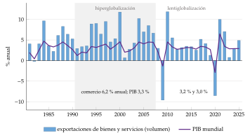
Fuente: elaboración propia con datos del Banco Mundial, World Development Indicators .
La estructura sectorial (CUCI; gráfico 6):
manufacturas: casi el 70 % de las exportaciones de mercancías (el 75 % en 1995); dentro de ellas, la maquinaria y el material de transporte son la mitad, con la electrónica en cabeza;
combustibles y productos de las industrias extractivas: el 13,5 % (combustibles, 9,5 %; minerales y metales, 4 %); su peso sube y baja con los precios de las materias primas (máximos de 2008, 2013 y 2022);
productos agrícolas: el 10 % (alimentos, 9 %; materias primas agrícolas, 1 %);
la novedad: los bienes que hacen posible la inteligencia artificial (semiconductores, servidores, equipos de telecomunicaciones) pasaron del 7-8 % del comercio en 2016-2023 al 14,8 % en el primer semestre de 2026.
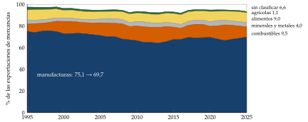
Fuente: elaboración propia con datos del Banco Mundial, World Development Indicators, a partir de UN Comtrade . Manufacturas: secciones 5 a 8 de la CUCI sin la división 68; combustibles: sección 3; minerales y metales: divisiones 27, 28 y 68; alimentos: secciones 0, 1 y 4 y división 22; materias primas agrícolas: sección 2 sin 22, 27 y 28.
La estructura geográfica:
3 polos: Asia oriental y el Pacífico (35 % de las exportaciones mundiales en 2025, frente al 22 % en 1990), Europa y Asia central (38 %, frente al 51 %) y América del Norte (10 %, frente al 15 %); el resto del mundo apenas suma el 17 % (gráfico 7);
China, primer exportador del mundo desde 2009, vende el 14,4 % del total (el 1,8 % en 1990), y Estados Unidos es el primer importador (13,2 %) (tabla 1);
Asia tira: aportó el 71 % del crecimiento del volumen del comercio en 2025, y sus exportaciones crecen un 9,9 % en 2026, mientras las de Oriente Medio caen un 17 % por la guerra;
comercio intrarregional: en Europa y Asia la mayor parte del comercio es entre vecinos, con mucho comercio intraindustrial (exportar e importar a la vez productos del mismo sector) y de bienes intermedios dentro de las CGV [ver tema 3.B.6].
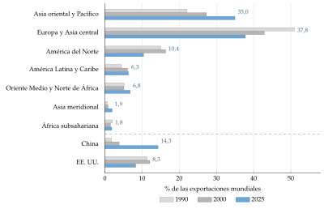
Fuente: elaboración propia con datos del Banco Mundial, World Development Indicators, a partir de la OMC . Regiones del Banco Mundial (con todas sus economías, también las de renta alta); cada región incluye el comercio entre sus miembros.
| Exportadores de mercancías | Importadores de mercancías | Exportadores de servicios | |||
| País | % | País | % | País | % |
| 1. China | 14,4 | 1. EE. UU. | 13,2 | 1. EE. UU. | 12,7 |
| 2. EE. UU. | 8,3 | 2. China | 9,7 | 2. Reino Unido | 7,6 |
| 3. Alemania | 6,7 | 3. Alemania | 5,8 | 3. Irlanda | 5,9 |
| 4. Países Bajos | 3,8 | 4. Reino Unido | 3,6 | 4. China | 5,3 |
| 5. Hong Kong | 2,9 | 5. Países Bajos | 3,3 | 5. Alemania | 5,3 |
| 6. Japón | 2,8 | … | 8. India | 4,3 | |
| 20. España | 1,7 | 16. España | 1,9 | 10. España | 2,6 |
Fuente: elaboración propia con datos de la OMC, Global Trade Outlook and Statistics de marzo de 2026 . Cuotas sobre el total mundial, con el comercio entre los países de la UE. Sin él, la UE sería el segundo exportador de mercancías (13,8 %), tras China (17,5 %).
II.2. El comercio de servicios y las cadenas globales de valor
Nexo: los servicios son la parte del comercio que más crece y la que más ha cambiado con la tecnología.
El tamaño: 9,6 billones de dólares en 2025, una cuarta parte del comercio mundial de bienes y servicios; en valor añadido, casi la mitad, porque van incorporados en los bienes (diseño, ingeniería, logística, marketing: la servitización de la industria).
Cómo se prestan: el Acuerdo General sobre el Comercio de Servicios (AGCS) distingue 4 modos: suministro transfronterizo (modo 1, una consultoría por internet), consumo en el extranjero (modo 2, el turismo), presencia comercial (modo 3, una filial bancaria; el principal) y presencia de personas físicas (modo 4, un ingeniero desplazado) [ver tema 3.B.34].
La estructura sectorial (gráfico 8):
otros servicios comerciales: el 60 % (5,8 billones), con los informáticos (13 % del total y +11 % en 2025), los empresariales y profesionales, los financieros y los cobros por propiedad intelectual;
viajes: el 20 % (1,9 billones), ya por encima de antes de la pandemia;
transporte: el 16 % (1,5 billones), que sigue al comercio de mercancías;
la gran tendencia: los servicios prestados digitalmente (5,3 billones, +10 %) son ya el 15 % de las exportaciones mundiales de bienes y servicios.
La estructura geográfica: es más concentrada que la de las mercancías y favorece a los avanzados: Europa exporta el 53 % de los servicios digitales, Asia el 23 % y América del Norte el 18 %; entre los emergentes destaca la India (4,3 % de las exportaciones mundiales de servicios, sobre todo informáticos); España es el 10.º exportador, con el turismo y, cada vez más, los servicios empresariales [ver tema 4.A.13] [ver tema 4.A.22].
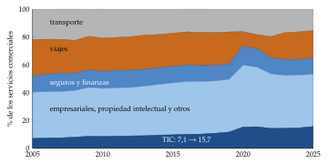
Fuente: elaboración propia con datos del Banco Mundial, World Development Indicators, a partir del FMI . TIC: telecomunicaciones, informática e información. «Empresariales, propiedad intelectual y otros»: otros servicios empresariales, cargos por el uso de la propiedad intelectual, servicios personales, culturales y recreativos, servicios relacionados con los bienes y construcción.
Las cadenas globales de valor: una cadena global de valor es la serie de fases con que se produce un bien o un servicio cuando al menos 2 de ellas se hacen en países distintos; cada país se especializa en tareas y no en productos:
explican que casi la mitad del comercio sea de bienes intermedios y que las estadísticas aduaneras (comercio bruto) cuenten varias veces el mismo valor: por eso se mide el comercio en valor añadido con tablas input-output internacionales (TiVA de la OCDE y la OMC) [ver tema 3.A.31];
se organizan en 3 «fábricas» regionales (Europa, con Alemania en el centro; América del Norte, con Estados Unidos, y Asia, con China);
desde la pandemia y la guerra comercial no se acortan tanto como se reordenan: se trasladan a países amigos o cercanos (friend-shoring, near-shoring), lo que favorece a economías conectoras como Vietnam o México [ver tema 3.B.18].
Aquí no se trata la teoría de las CGV (medición de la participación hacia atrás y hacia delante, comercio de tareas, hacer o comprar entre países) [ver tema 3.B.18].
II.3. La geografía del comercio: el modelo de gravedad
Nexo: hemos visto que el comercio se concentra en 3 polos y entre vecinos; el modelo de gravedad explica por qué.
a) Idea
Tinbergen (1962)5 trasladó al comercio la ley de la gravitación de Newton: 2 países comercian más cuanto más grandes son y menos cuanto más lejos están.
Es la regularidad empírica más sólida de la economía internacional y la herramienta con que se mide el efecto de las fronteras, los acuerdos comerciales o las sanciones [ver tema 3.B.10].
b) Modelo
i) Supuestos
Cada país gasta en los bienes de todos en proporción a su renta: los países grandes venden más y compran más.
Los bienes se diferencian por su origen: cada país produce variedades propias que el resto quiere (preferencia por la variedad).
Comerciar cuesta, y más cuanto mayor es la distancia (transporte, información, idioma, instituciones), menos si hay frontera común, idioma común o un acuerdo comercial.
ii) Desarrollo
La ecuación de gravedad: tomando logaritmos, el comercio bilateral se explica con los tamaños, la distancia y los acuerdos,
\[\ln X_{ij}=\beta_0+\beta_1\ln Y_i+\beta_2\ln Y_j-\beta_3\ln d_{ij}+\beta_4\,\mathrm{ACR}_{ij}+u_{ij}\tag{2}\]
con \(X_{ij}\) las exportaciones de \(i\) a \(j\), \(Y_i\) e \(Y_j\) sus PIB, \(d_{ij}\) la distancia, \(\mathrm{ACR}_{ij}\) una variable que vale 1 si tienen un acuerdo comercial regional y \(u_{ij}\) el error.
Con fundamentos: Anderson (1979) y Anderson y Wincoop (2003) la deducen de la demanda con bienes diferenciados: lo que importa no es solo el coste de comerciar entre \(i\) y \(j\), sino ese coste en relación con el de comerciar con todos los demás (la resistencia multilateral); en la práctica se estima con efectos fijos de exportador e importador.
iii) Implicaciones
El tamaño: la elasticidad del comercio al PIB es cercana a 1: el comercio crece con los mercados, y por eso se desplaza hacia Asia.
La distancia: su elasticidad ronda \(-1\): el doble de lejos, la mitad de comercio. Explica la regionalización (los 3 polos) y que el comercio entre vecinos domine.
Las fronteras y los acuerdos: una frontera reduce mucho el comercio (el comercio entre provincias canadienses era unas 20 veces mayor que con estados de Estados Unidos de tamaño y distancia parecidos), y un acuerdo comercial lo aumenta.
c) Extensiones
Microfundamentos: la nueva teoría del comercio (Krugman, 1980) y la de empresas heterogéneas (Melitz, 2003; Chaney, 2008) dan ecuaciones de gravedad; con heterogeneidad, la distancia actúa sobre todo por el margen extensivo (cuántas empresas exportan) [ver tema 3.B.6].6
La geopolítica como distancia: tras la invasión de Ucrania, el comercio entre bloques geopolíticos cayó más que el comercio dentro de ellos, como si los bloques hubieran «alejado» a los países.
d) Evidencia empírica
El caso de España (gráfico 9): con las exportaciones de 2024 a 160 destinos, divididas por el PIB de cada uno, la pendiente frente a la distancia es \(-1{,}29\) (\(R^2=0{,}39\)): por cada 1 % más de distancia, España vende un 1,3 % menos en proporción al tamaño del destino; los socios de la UE están muy por encima de la recta, por el mercado único [ver tema 4.A.22].
El rompecabezas de la distancia: pese al abaratamiento del transporte y de las comunicaciones, el efecto de la distancia no ha disminuido desde los años 50 en los metaanálisis.
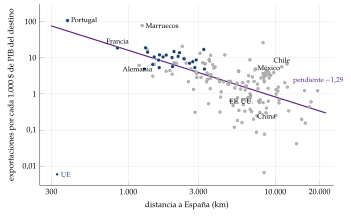
Fuente: elaboración propia con datos de UN Comtrade (exportaciones de mercancías de 2024), del FMI (PIB del destino, World Economic Outlook de octubre de 2026) y de Natural Earth (distancia entre centroides) . Escalas logarítmicas. Cada punto es un país de destino; en azul, los de la UE.
e) Valoración
A favor: ajusta muy bien los datos (\(R^2\) habituales del 0,7-0,8), tiene fundamentos teóricos y es la base de casi toda la evaluación de la política comercial.
En contra: la distancia resume costes muy distintos (transporte, idioma, confianza); la estimación tiene problemas (comercio cero, resistencia multilateral, causalidad inversa con los acuerdos); y no dice qué se comercia, solo cuánto.
Lo que queda: la geografía sigue mandando; por eso el crecimiento de Asia arrastra el comercio hacia allí y la fragmentación por bloques se nota en los datos. El capital, en cambio, no se rige solo por el tamaño y la distancia, como vemos ahora.
II.4. Los flujos financieros
Nexo: el comercio tiene una contrapartida financiera; además, la mayor parte de los flujos financieros no financia comercio, sino que es compraventa de activos entre inversores.
Las categorías de la cuenta financiera (Manual de Balanza de Pagos del FMI, 6.ª edición) [ver tema 3.B.11]:
inversión directa: la que da influencia duradera en la gestión de una empresa (10 % o más del capital); la más estable;
inversión de cartera: acciones y bonos sin control; volátil;
otra inversión: préstamos, sobre todo bancarios, y depósitos; la más procíclica;
derivados y reservas de los bancos centrales.
3 rasgos de su estructura:
van sobre todo entre países ricos: los centros financieros (Nueva York, Londres, Luxemburgo, Irlanda, Países Bajos, Singapur, Hong Kong) intermedian buena parte de los flujos, y muchas inversiones pasan por sociedades instrumentales;
suben y bajan con el ciclo: los flujos brutos llegaron a cerca del 20 % del PIB mundial en 2007 y se desplomaron con la crisis [ver tema 3.B.26];
el capital va «cuesta arriba»: en términos netos, los países ricos, con Estados Unidos a la cabeza, reciben ahorro de los emergentes; es la paradoja de Lucas: con rendimientos decrecientes, el capital debería ir a donde escasea [ver tema 3.B.12].7
La inversión extranjera directa:
1,6 billones de dólares en 2025 (+6 %), la primera subida tras 2 años de caídas, pero lejos del máximo de 2007 (gráfico 10);
más de la mitad va a las economías en desarrollo (0,9 billones, +2 %), con Asia en desarrollo (0,64 billones, el 40 % del mundo) y América Latina (+14 %); África apenas recibe 70.000 millones;
por sectores: la inversión en sectores estratégicos (inteligencia artificial, semiconductores, minerales críticos, energía limpia) es ya el 44 % de los proyectos nuevos (el 16 % en 2020); las fusiones y adquisiciones caen un 7 %;
las economías de renta baja y media-baja solo reciben en torno al 10 % de esa inversión estratégica.
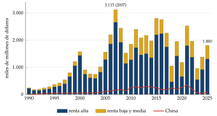
Fuente: elaboración propia con datos del Banco Mundial, World Development Indicators, a partir de la balanza de pagos del FMI . Renta alta y renta baja y media según la clasificación vigente del Banco Mundial. La UNCTAD da cifras algo distintas (1,6 billones en 2025, frente a 1,8 aquí) por su tratamiento de los flujos que solo pasan por un país.
La banca internacional: los activos transfronterizos de los bancos suman 49,5 billones de dólares a mediados de 2026, por encima del máximo de 2007 (32,9), y el crédito transfronterizo crece un 11 % anual, en euros y en dólares; solo un 10 % es frente a emergentes (gráfico 11).
Las remesas: unos 685.000 millones de dólares llegaron en 2024 a los países de renta baja y media, más que la IED que reciben (462.000 millones, según la balanza de pagos); son la fuente de financiación exterior más estable de los países pobres [ver tema 3.B.29].
Los desequilibrios: los saldos corrientes del mundo vuelven a crecer (3,8 % del PIB mundial en 2025), con el superávit de China (735.000 millones de dólares) y el déficit de Estados Unidos (1,1 billones); en stock, Estados Unidos debe al resto del mundo, en términos netos, 27,5 billones de dólares, y Alemania, Japón y China son los grandes acreedores (más de 3,5 billones cada uno) [ver tema 4.A.21].
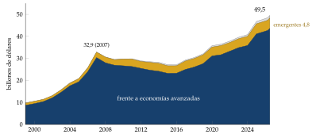
Fuente: elaboración propia con datos del BPI, estadísticas bancarias territoriales . Cierre de cada año y, en 2026, marzo y junio. «Resto»: organismos internacionales y sin asignar.
II.5. El ciclo financiero global
Nexo: ¿por qué los flujos financieros suben y bajan a la vez en todo el mundo? La respuesta es el ciclo financiero global.
a) Idea
Rey (2013) observa que los precios de los activos con riesgo, los flujos brutos de capital y el crédito se mueven a la vez en todo el mundo, sea cual sea la situación de cada país: hay un ciclo financiero global.
Lo dirige la política monetaria del país que emite la moneda dominante, Estados Unidos, y la aversión al riesgo de los inversores globales.
b) Modelo
i) Supuestos
Libertad de capitales y grandes intermediarios globales (bancos y fondos) que financian en dólares en todo el mundo.
Las restricciones de esos intermediarios dependen de su capital y de la volatilidad: cuando el riesgo percibido baja, pueden apalancarse más.
El dólar es la moneda dominante de la financiación y de la facturación internacionales.
ii) Desarrollo
El circuito, paso a paso (figura 1):
Paso 1, la Reserva Federal relaja su política:
bajan los tipos de interés y la aversión al riesgo (el índice VIX de volatilidad cae).
Paso 2, los intermediarios se apalancan:
con menos riesgo medido, se endeudan más en dólares y compran activos en todo el mundo.
Paso 3, el capital entra en los demás países:
suben los flujos brutos, el crédito y los precios de los activos, aunque cada país esté en una fase distinta de su ciclo.
Paso 4, el ciclo se invierte:
cuando la Reserva Federal endurece o sube el VIX, todo va al revés, con paradas súbitas en los emergentes.
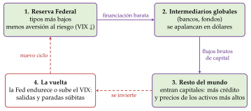
iii) Implicaciones
De trilema a dilema: con libertad de capitales, el tipo de cambio flexible no basta para aislar a un país del ciclo global; la elección real es entre controlar los flujos (con medidas macroprudenciales o de gestión de capitales) o renunciar a parte de la autonomía monetaria [ver tema 3.B.15].8
Para los emergentes: más vulnerables cuanto más deuda en dólares y cuanto más dependan de flujos de cartera y bancarios; menos con IED y reservas.
c) Extensiones
Miranda-Agrippino y Rey (2020) estiman que un endurecimiento de la Reserva Federal reduce el apalancamiento de los intermediarios globales, los flujos de crédito y los precios de los activos en todo el mundo.
El paradigma de la moneda dominante: como gran parte del comercio se factura en dólares, el tipo de cambio del dólar mueve también los precios y los volúmenes del comercio.
d) Evidencia empírica
El ciclo se ve en los grandes episodios: entradas en los emergentes con la expansión de 2009-2012, salidas con el anuncio de la retirada de estímulos de 2013 (taper tantrum), con la pandemia en marzo de 2020 y con las subidas de tipos de 2022.
En 2026 la financiación bancaria transfronteriza crece un 11 % anual, pero hacia los emergentes de Asia cae un 2,9 %: el ciclo es global, pero no llega igual a todos.
e) Valoración
A favor: explica por qué los flujos financieros son sincronizados y volátiles, y ha cambiado la forma de entender la política de los emergentes (reservas, controles de capital, macroprudencial).
En contra: los países con tipo flexible y buenas instituciones conservan bastante autonomía; el trilema se ha debilitado, pero no ha desaparecido.
Recapitulando el apartado II: el comercio se concentra en 3 polos con Asia en ascenso y obedece a la gravedad; las finanzas van sobre todo entre ricos y siguen a la Reserva Federal. En ambos aparecen con fuerza los emergentes, que estudiamos en el último apartado.
III. Las nuevas áreas emergentes
Conclusión anticipada: las economías emergentes crecen más porque parten de más lejos (convergencia condicional), pero solo convergen las que tienen instituciones, inversión y apertura. Asia lidera; el Golfo, América Latina y África siguen atados a las materias primas, y todas afrontan la fragmentación, la deuda y la trampa de la renta media.
Nexo: tras la fotografía de los flujos, quiénes son los nuevos protagonistas y por qué emergen.
III.1. Concepto y causas: la convergencia condicional
No hay una definición oficial: el término «mercados emergentes» nació en los años 80 en la Corporación Financiera Internacional, del Banco Mundial, para atraer inversores a economías en rápida industrialización. Hoy se usan varias clasificaciones (tabla 2):
el FMI divide el mundo en economías avanzadas y EMED, según la renta por habitante, la diversificación de las exportaciones y la integración financiera;
el Banco Mundial clasifica por renta nacional bruta por habitante (renta baja, media-baja, media-alta y alta);
los proveedores de índices bursátiles (MSCI, FTSE) miran el tamaño y la accesibilidad de sus mercados;
los BRICS: Brasil, Rusia, la India y China (las iniciales que propuso Jim O’Neill en 2001), a los que se sumaron Sudáfrica (2010), Egipto, Etiopía, Irán y los Emiratos Árabes Unidos (2024) e Indonesia (2025); Arabia Saudí fue invitada y participa sin haber confirmado su adhesión. Tienen además 10 países socios, entre ellos Malasia, Nigeria, Tailandia y Vietnam, y en septiembre de 2026 celebraron su cumbre en Nueva Delhi.
Sus rasgos: crecimiento alto pero volátil, población joven y urbanización rápida, una clase media en expansión, dependencia del capital exterior y de las materias primas en muchos casos, e instituciones todavía débiles.
| Quién | Criterio | Grupos |
|---|---|---|
| FMI (WEO) | Renta por habitante, diversificación de las exportaciones, integración financiera | Avanzadas (unas 40) y EMED (el resto), por regiones |
| Banco Mundial | Renta nacional bruta por habitante de 2025 (método Atlas) | Baja (hasta 1.175 $), media-baja (hasta 4.635 $), media-alta (hasta 14.375 $) y alta |
| MSCI y FTSE | Tamaño, liquidez y acceso de los mercados financieros | Desarrollados, emergentes y frontera |
| BRICS | Pertenencia a un foro político | 11 miembros, 10 socios; el 40,5 % del PIB mundial en PPA y casi la mitad de la población |
Fuente: elaboración propia a partir del FMI, el Banco Mundial y la declaración de la cumbre de los BRICS de Nueva Delhi (2026) . El peso de los BRICS, con datos del FMI (PPPSH, 2025), contando a Arabia Saudí.
Nexo: ¿por qué emergen? La teoría del crecimiento da una respuesta: la convergencia condicional.
a) Idea
En el modelo de Solow, cuanto más lejos está una economía de su estado estacionario, más deprisa crece: el capital rinde más donde escasea y la tecnología se puede imitar. Es la convergencia (catch-up).
Pero cada economía converge a su estado estacionario, que depende del ahorro, la población, el capital humano y las instituciones: la convergencia es condicional [ver tema 3.A.43] [ver tema 3.A.45].
b) Modelo
i) Supuestos
Tecnología común con rendimientos decrecientes del capital y progreso técnico que se difunde a todos.
Estados estacionarios distintos según las tasas de ahorro, de crecimiento de la población y de inversión en capital humano, y la calidad de las instituciones.
ii) Desarrollo
La ecuación de convergencia \(\beta\) (Barro y Sala-i-Martín): el crecimiento medio de la renta por habitante del país \(i\) entre \(t-T\) y \(t\) depende de su nivel inicial y de los determinantes de su estado estacionario, \(\vec{x}_i\),
\[\frac{1}{T}\ln\frac{(Y/L)_{i,t}}{(Y/L)_{i,t-T}}=\beta_0+\beta_1\ln\left(\frac{Y}{L}\right)_{i,t-T}+\vec{x}_i\cdot\vec{\psi}+u_{i,t}\tag{3}\]
Absoluta, si \(\beta_1<0\) sin controles (\(\vec{\psi}=\vec{0}\)): los pobres crecen más que los ricos; condicional, si \(\beta_1<0\) solo al controlar por \(\vec{x}_i\).
iii) Implicaciones
Emergen los que se ponen en el camino: los que elevan su estado estacionario (ahorran e invierten, educan, abren su economía, mejoran sus instituciones) crecen deprisa mientras se acercan a él.
La convergencia se frena al acercarse: los rendimientos decrecientes hacen que el crecimiento de China se modere a medida que se enriquece.
c) Evidencia empírica
Hasta 2000 no había convergencia absoluta: los ricos crecían tanto o más que los pobres. Desde 2000 sí la hay, aunque lenta (gráfico 12): con 189 países, la pendiente entre el logaritmo del PIB por habitante de 2000 y su crecimiento anual hasta 2024 es \(-0{,}43\) (quien partía con el doble de renta creció 0,3 puntos menos al año) y el ajuste es pobre (\(R^2=0{,}08\)): la renta inicial explica poco; lo demás lo explican los determinantes del estado estacionario.
China (crecimiento del 7,7 % anual), Vietnam (5,1 %) o la India (4,9 %) están muy por encima de la recta; buena parte de América Latina y de los exportadores de petróleo, por debajo.
Las instituciones explican buena parte de la diferencia.9
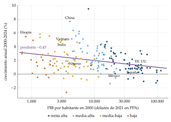
Fuente: elaboración propia con datos del Banco Mundial, World Development Indicators (PIB por habitante en PPA, dólares constantes de 2021) . Escala logarítmica en el eje horizontal. Colores según la clasificación por renta vigente del Banco Mundial.
d) Valoración
A favor: explica por qué crecen más los emergentes y por qué no todos lo hacen.
En contra: la ecuación no dice qué causa qué (las variables de \(\vec{x}_i\) son a su vez resultado del desarrollo), y la regresión a la media puede crear convergencia aparente (la falacia de Galton).
Lo que queda: emerger exige elevar el propio estado estacionario; con eso en mente, veamos qué áreas lo están consiguiendo.
III.2. Las principales áreas emergentes
China: el 19,6 % del PIB mundial en PPA y el primer exportador del mundo (14,4 %); crece menos (4,5 % en 2026 y 4 % en 2027) por el envejecimiento, la crisis inmobiliaria y la deuda local, y compensa la debilidad de su demanda interna con exportaciones y un superávit corriente récord; domina las cadenas de los vehículos eléctricos, las baterías y las renovables [ver tema 3.B.21].
La India: la gran economía que más crece (7 %), con una población joven y el 8,2 % del PIB mundial en PPA, que será más del 10 % en 2031; exporta sobre todo servicios informáticos y empresariales, y atrae montaje de electrónica que sale de China.
El Sudeste Asiático: las ASEAN-5 crecen en torno al 4,4 % y Vietnam, más del 8 %; son las economías conectoras por excelencia, que reciben IED y exportan a Estados Unidos lo que antes llegaba desde China [ver tema 3.B.35].
El Golfo: los fondos soberanos y la diversificación (logística, finanzas, turismo) lo habían convertido en un nodo entre Asia, Europa y África; la guerra de 2026 hunde su producción (Arabia Saudí, \(-3{,}3\) %), con un rebote previsto en 2027.
América Latina: crece poco (2,3 %), atada a las materias primas, aunque los minerales críticos (litio, cobre) y el acercamiento de la producción a Estados Unidos dan oportunidades a México y a otros; el acuerdo entre la UE y Mercosur abre mercado [ver tema 3.B.41].
África subsahariana: crece un 4,5 %, con la población más joven del mundo; la Zona de Libre Comercio Continental Africana, ratificada por unos 50 países, busca que los africanos comercien más entre sí, una parte todavía pequeña de su comercio total.
El comercio Sur-Sur, entre economías en desarrollo, crece más deprisa que el resto (un 9 % en 2025, frente al 7,5 % del total).
III.3. Retos de las economías emergentes
La trampa de la renta media: muchas economías se estancan al llegar a una renta media, cuando se agotan el traslado de trabajadores del campo a la industria y la imitación; para seguir creciendo tienen que innovar.
La fragmentación: el modelo de crecer exportando manufacturas a los avanzados se complica con los aranceles, la política industrial de los ricos y la división por bloques.
La deuda y el ciclo financiero: la subida de los tipos y del dólar encarece su financiación; varios países de renta baja necesitan reestructurar [ver tema 3.B.29].
Las materias primas y el clima: la transición energética cambia quién gana (minerales críticos) y quién pierde (petróleo), y los emergentes son los más expuestos al cambio climático [ver tema 3.B.31].
Recapitulando el apartado III: los emergentes crecen porque convergen, pero solo los que elevan su estado estacionario lo consiguen de forma sostenida; Asia lo ha hecho y el resto lo tiene más difícil en un mundo fragmentado.
Conclusión
Recapitulación:
En conclusión,
la economía mundial ha resistido aranceles, guerra y petróleo caro, pero crece menos que antes (3,1 % en 2026 y 3,2 % a medio plazo), con riesgos a la baja y poco margen fiscal;
el comercio es sobre todo de manufacturas, cada vez más de servicios digitales y de bienes de la inteligencia artificial, y se concentra en 3 polos, como predice el modelo de gravedad; las finanzas van entre ricos y siguen al ciclo financiero global;
las nuevas áreas emergentes, con Asia al frente, convergen si elevan su estado estacionario, y el centro de gravedad de la economía mundial se desplaza hacia el este.
Relevancia:
Para España, el desplazamiento hacia Asia y la fragmentación cambian dónde están sus mercados y sus competidores: la diversificación de destinos es parte de la política de internacionalización [ver tema 4.A.24] [ver tema 4.A.25].
Extensiones:
El sistema económico internacional [ver tema 3.B.21], la nueva globalización y las CGV [ver tema 3.B.18], la teoría de la integración [ver tema 3.B.10], la OMC [ver tema 3.B.33] y la financiación del desarrollo [ver tema 3.B.29].
Opinión:
La fragmentación tiene un coste, pero el comercio se ha mostrado más resistente que las reglas que lo ordenaban: los flujos se reordenan antes que desaparecer.
Idea final:
Volvamos al refrán: «Dios aprieta, pero no ahoga».
¿Hacia dónde va la economía mundial y quién la mueve? Los choques aprietan (menos crecimiento, más riesgos, menos cooperación), pero no ahogan: la economía mundial sigue creciendo, cada vez más empujada desde Asia y desde los emergentes que han sabido converger. Lo que está en juego es si el resto podrá seguirlos en un mundo dividido en bloques.
A. Anexo: fuentes para poner al día el tema
Dónde buscar cada dato (todas gratuitas y con descarga directa).
Crecimiento, inflación, PIB en PPA, saldos corrientes: FMI, World Economic Outlook (abril y octubre; actualizaciones en enero y julio), base de datos y DataMapper. Para la estabilidad financiera, el Global Financial Stability Report; para la deuda pública, el Fiscal Monitor; para los desequilibrios, el External Sector Report (julio).
Previsiones alternativas: OCDE, Economic Outlook (junio y diciembre; informes intermedios en marzo y septiembre); Banco Mundial, Global Economic Prospects (enero y junio).
Comercio: OMC, Global Trade Outlook and Statistics (abril y octubre) y el portal stats.wto.org; UNCTAD, Global Trade Update; UN Comtrade (detalle por producto y socio); OCDE-OMC, TiVA (comercio en valor añadido).
Inversión: UNCTAD, World Investment Report (junio o julio).
Banca y finanzas internacionales: BPI, estadísticas bancarias territoriales y consolidadas (trimestrales) e Informe Económico Anual (junio).
Remesas: Banco Mundial y KNOMAD.
Los gráficos de este tema se rehacen con un programa que baja los datos de esas fuentes; las cifras del texto están en el registro de datos actualizables del tema.
B. Anexo: preguntas de test
Preguntas tipo test del primer ejercicio: simulador de test.
Bibliografía
Las cifras no se contradicen: el FMI pondera el crecimiento de cada país por su PIB en PPA, que da más peso a los emergentes, que crecen más; el Banco Mundial pondera con tipos de cambio de mercado. Con los mismos pesos, el FMI daría un 2,5 % para 2026, igual que el Banco Mundial.↩︎
Robert Solow recibió el Premio Nobel de Economía en 1987 «por sus contribuciones a la teoría del crecimiento económico».↩︎
Philippe Aghion y Peter Howitt recibieron el Premio Nobel de Economía en 2025, con Joel Mokyr: ellos 2, «por la teoría del crecimiento sostenido mediante la destrucción creativa», y Mokyr, «por haber identificado los requisitos previos del crecimiento sostenido mediante el progreso tecnológico».↩︎
La PPA corrige las diferencias de precios entre países: un corte de pelo es más barato en Nueva Delhi que en Nueva York. Por eso mide mejor el volumen de producción y el nivel de vida, mientras que los tipos de cambio de mercado miden mejor el poder de compra en los mercados internacionales (importar, invertir fuera, pagar deuda) [ver tema 3.B.14].↩︎
Jan Tinbergen recibió el primer Premio Nobel de Economía, en 1969, con Ragnar Frisch, «por desarrollar y aplicar modelos dinámicos para el análisis de los procesos económicos».↩︎
Paul Krugman recibió el Premio Nobel de Economía en 2008 «por su análisis de los patrones del comercio y de la localización de la actividad económica».↩︎
Robert Lucas recibió el Premio Nobel de Economía en 1995 «por haber desarrollado y aplicado la hipótesis de las expectativas racionales, transformando así el análisis macroeconómico y profundizando en la comprensión de la política económica».↩︎
El trilema de la economía abierta (no se pueden tener a la vez tipo de cambio fijo, libertad de capitales y política monetaria propia) sale de los trabajos de Robert Mundell y Marcus Fleming. Mundell recibió el Premio Nobel de Economía en 1999 «por su análisis de la política monetaria y fiscal con distintos regímenes cambiarios y su análisis de las áreas monetarias óptimas».↩︎
Daron Acemoglu recibió el Premio Nobel de Economía en 2024, con Simon Johnson y James Robinson, «por sus estudios sobre cómo se forman las instituciones y cómo afectan a la prosperidad».↩︎